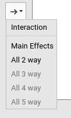

Multiple regression, moderated regression, and simple slopes
keywords Multiple regression, moderated regression, simple slopes
In this example we tackle a moderated regression analysis with simple slopes analysis and simple slopes graphs. Data are from Cohen et al 2003 and can be downloaded here. A detailed comparison between the following results and results obtained with other software (SPSS, PROCESS, and R) can be found in Rosetta store: moderation. We are going to show how to estimate and interpret interactions with continuous variables employing a General Linear Model, but the same reasoning (and software options) can be applied to interactions in Generalized linear models, Mixed Models, and Generalized Mixed Models.
The research design
The research is about physical endurance associated with age and
physical exercise. 245 participants were measured while jogging on a
treadmill. Endurance was measured in minutes (‘yendu’ in the file).
Participants’ age (xage in years) and number of years of
physical exercise (zexer in years) were recorded as well
(in jamovi Exploration -> Descriptive)

The researcher is interested in studying the relationships between
endurance, age, and exercising, with the hypothesis that the effect of
age (expected to be negative) is moderated by exercise, such that the
more participants work out (higher levels of exer) the less
age negatively affects endurance.
Understanding the problem
We can think about this analytic problem as a multiple regression, where the effect of age and exercise can be estimated while keeping constant the other variable. However, the researcher puts forward a moderation hypothesis, because s/he expects the effect of age to change for different levels of exercising. We than need an interaction between age and exercise.
We first run a multiple regression (to warm up), then we estimate a multiple regression with an interaction (moderated regression) and we probe the interaction with a simple slope analysis and simple slope graphs. Technical details can be found in Cohen et al 2003, or in Preacher website.
GLM
Multiple regression
jamovi GAMLj module for GLM requires to set the variables in the right field depending on their role in the model and their type.

Thus, we push yendu in the
Dependent Variable field and both xage and
zexer in the Covariates field, being both
variables quantitative.
As soon as the variables are set, jamovi fills in the tables in the
output panel with the estimation results. However, it is worth noticing
that the statistical model has been defined by default by the software:
We can see that in the Model tab.

jamovi, following a somehow old tradition established by SPSS, automatically includes continuous independent variables in the model without their interaction. For categorical variables the default behavior is to include both main effects and interactions.
Thus, the model we are estimating now is
yendu~xage+zexer.
Results

Results show that both age and exercising have an effect on endurance
while keeping constant the other variable. The Model Info
table shows the R-squared, R-squared=.166 (adjusted .159), indicating
the the two independent variables together explain around 16% of the
dependent variable variance.
The Model Coefficients table reports the estimates of
the B coefficients. We can interpret the B coefficients (under
Estimate column of Model Coefficients table)
because the units of the variables are intuitively clear:
xageB=-.257: While keeping exercise constant, one year more in age corresponds on average to a decrease in endurance of .257 minutes.zexerB=-.916: While keeping age constant, one year more of exercising corresponds on average to an increase in endurance of .916 minutes.
For each coefficient the confidence interval is also reported.
A special note should be made for the intercept (nobody interpret intercepts, but we do now). The intercept is the expected value (the mean) of the dependent variable, estimated for all independent variables equal to zero. In jamovi GLM, however, continuous variables are centered to their mean by default (this will prove very helpful later on), thus the interpretation of the intercept should be: the expected value of the dependent variable estimated for the average values of the independent variables. This is not bad, after all, because 26.5 is actually the mean of the dependent variables (see descriptives above), thus a plot of the effects will be centered around the dependent variable mean. In case we want the independent variables not to be centered, we can select a different scaling in the `Covariates Scaling’ tab.
In general, we want to report standardized effect size indexes, for the sake of comparison, meta-analysis, APA task forces (and probably the Marvel Avengers league). jamovi GLM offers a plethora of them:
- betas: standardized coefficients.
- eta-squared: variance explained over the total variance of the dependent variable (proportion).
- partial eta-squared: variance explained over the variance not explained by other effects (proportion).
- omega-squared: expected proportion of variance explained. It is computed as variance explained over the variance not explained by other effects, expected in the population.
By ticking the options in the variable definition panel, we obtain the ES indexes as follows.

Moderated regression
To include the interaction we simply add the interaction effect in
the Model Terms in the Model tab.

The interaction is pushed in the Model Terms by
selecting the variables on the left side and clicking
interaction in the “arrow” cascade menu.

Results
Let’s us first focus on the parameters estimates, the B coefficients.

The interaction term appears to be statistically significant, B=0.047, t(241)=3.48,p<.001,\(\eta^2\)=0.048, justifying interpreting the first-order effects as conditional effects. Because variables are centered to their means, we can interpret the first-order effect as “average” effects. On average:
xageB=-.261: one year more in age corresponds on average to a decrease in endurance of .26 minutes.zexerB=-.972: one year more of exercising corresponds on average to an increase in endurance of .97 minutes.
One can also report the betas (last column in the
Model Coefficients table). Please notice that in jamovi
GLM, the estimates of the betas are correct also in the presence of the
interaction, because the variables are standardized before the
interaction term is computed.
Simple Slopes
We can now probe the interaction. We go to
Simple effects tab and select xage as
Simple effects variable and zexer as
Moderator. In this way we obtain the effect of age computed
for high exercise (zexer centered to 1 SD above average),
the main effect of age (zexer centered to its mean) and the
effect of age computed for low exercise (zexer centered to
-1 SD above average).
jamovi GLM produces both the F-tests and the parameter estimates for the simple slopes. We focus on the latter table now.

The first row of the table shows the simple slopes of age (the effect of age) computed for exercise equal to minus one standard deviation (-4.78). The effect of age is negative and strong ,B=-.487, t(241)=-5.289,p<.001. Going down the table we find the simple slope of age (the effect of age) computed for average exercise (0): The average effect of age, B=-.261, t(241)=-4.085,p<.001, is negative and weaker than for high exercise. Finally, for high exercise (+4.78), the effect is weak and not significant, B=-.036, t(241)=-0.400,p=.690.
One can change the conditioning levels of the moderators by going
back to Covariates scaling panel. If we want to use the
percentiles (25%,50%,75%), for instance, we can flag the option in
Covariates scaling accordingly.
The simple effects are now changed, because they are estimated for a different set of values of the moderator.

One can further tweak the appearance of the tables by selecting
different value/labels options in Covariates Scaling panel.
For instance, by selecting Values + Labels one obtains
detailed labeling in the tables.


Simple Slopes Plot
We can get a clear picture of the interaction by asking for a plot. Also the plot module takes care of centering the variables in a way that makes the plot clearly understandable.

The command plots the effect of the Horizontal axis
variable for three levels (decided in Covariate scaling) of
the Separate Lines variable.

The nice plot we get shows the simple effects (simple equations to be precise) with the prediction confidence intervals indicated by the colored shades around the lines. If needed, the confidence intervals can be substituted with the standard errors of the estimates or they can be removed completely.
Finally, in order to give a more honest account of the model fit, we can visualize the simple slopes over the the actual data.

Starting from version 3.3.4 one can also estimate Johnson-Neyman plot
Examples
Some worked out practical examples can be found here
Comments?
Got comments, issues or spotted a bug? Please open an issue on GAMLj at github or send me an email